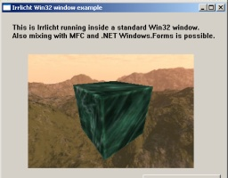

The Irrlicht
Engine Documentation © 2003-2009 by Nikolaus Gebhardt. Generated
on Sun Dec 13 09:14:15 2009 by Doxygen
(1.5.6)
| Home | Namespaces | Hierarchy | Alphabetical List | Class list | Files | Namespace Members | Class members | File members | Tutorials |

This example only runs under MS Windows and demonstrates that Irrlicht can render inside a win32 window. MFC and .NET Windows.Forms windows are possible, too.
In the begining, we create a windows window using the windows API. I'm not going to explain this code, because it is windows specific. See the MSDN or a windows book for details.
#include <irrlicht.h> #ifndef _IRR_WINDOWS_ #error Windows only example #else #include <windows.h> // this example only runs with windows using namespace irr; #pragma comment(lib, "irrlicht.lib") HWND hOKButton; HWND hWnd; static LRESULT CALLBACK CustomWndProc(HWND hWnd, UINT message, WPARAM wParam, LPARAM lParam) { switch (message) { case WM_COMMAND: { HWND hwndCtl = (HWND)lParam; int code = HIWORD(wParam); if (hwndCtl == hOKButton) { DestroyWindow(hWnd); PostQuitMessage(0); return 0; } } break; case WM_DESTROY: PostQuitMessage(0); return 0; } return DefWindowProc(hWnd, message, wParam, lParam); } int main() //int WINAPI WinMain(HINSTANCE hInstance, HINSTANCE hpre, LPSTR cmd, int cc) { HINSTANCE hInstance = 0; // create dialog const char* Win32ClassName = "CIrrlichtWindowsTestDialog"; WNDCLASSEX wcex; wcex.cbSize = sizeof(WNDCLASSEX); wcex.style = CS_HREDRAW | CS_VREDRAW; wcex.lpfnWndProc = (WNDPROC)CustomWndProc; wcex.cbClsExtra = 0; wcex.cbWndExtra = DLGWINDOWEXTRA; wcex.hInstance = hInstance; wcex.hIcon = NULL; wcex.hCursor = LoadCursor(NULL, IDC_ARROW); wcex.hbrBackground = (HBRUSH)(COLOR_WINDOW); wcex.lpszMenuName = 0; wcex.lpszClassName = Win32ClassName; wcex.hIconSm = 0; RegisterClassEx(&wcex); DWORD style = WS_SYSMENU | WS_BORDER | WS_CAPTION | WS_CLIPCHILDREN | WS_CLIPSIBLINGS | WS_MAXIMIZEBOX | WS_MINIMIZEBOX | WS_SIZEBOX; int windowWidth = 440; int windowHeight = 380; hWnd = CreateWindow( Win32ClassName, "Irrlicht Win32 window example", style, 100, 100, windowWidth, windowHeight, NULL, NULL, hInstance, NULL); RECT clientRect; GetClientRect(hWnd, &clientRect); windowWidth = clientRect.right; windowHeight = clientRect.bottom; // create ok button hOKButton = CreateWindow("BUTTON", "OK - Close", WS_CHILD | WS_VISIBLE | BS_TEXT, windowWidth - 160, windowHeight - 40, 150, 30, hWnd, NULL, hInstance, NULL); // create some text CreateWindow("STATIC", "This is Irrlicht running inside a standard Win32 window.\n"\ "Also mixing with MFC and .NET Windows.Forms is possible.", WS_CHILD | WS_VISIBLE, 20, 20, 400, 40, hWnd, NULL, hInstance, NULL); // create window to put irrlicht in HWND hIrrlichtWindow = CreateWindow("BUTTON", "", WS_CHILD | WS_VISIBLE | BS_OWNERDRAW, 50, 80, 320, 220, hWnd, NULL, hInstance, NULL);
So now that we have some window, we can create an Irrlicht device inside of it. We use Irrlicht createEx() function for this. We only need the handle (HWND) to that window, set it as windowsID parameter and start up the engine as usual. That's it.
// create irrlicht device in the button window irr::SIrrlichtCreationParameters param; param.WindowId = reinterpret_cast<void*>(hIrrlichtWindow); // hColorButton param.DriverType = video::EDT_OPENGL; irr::IrrlichtDevice* device = irr::createDeviceEx(param); // setup a simple 3d scene irr::scene::ISceneManager* smgr = device->getSceneManager(); video::IVideoDriver* driver = device->getVideoDriver(); scene::ICameraSceneNode* cam = smgr->addCameraSceneNode(); cam->setTarget(core::vector3df(0,0,0)); scene::ISceneNodeAnimator* anim = smgr->createFlyCircleAnimator(core::vector3df(0,15,0), 30.0f); cam->addAnimator(anim); anim->drop(); scene::ISceneNode* cube = smgr->addCubeSceneNode(20); cube->setMaterialTexture(0, driver->getTexture("../../media/wall.bmp")); cube->setMaterialTexture(1, driver->getTexture("../../media/water.jpg")); cube->setMaterialFlag( video::EMF_LIGHTING, false ); cube->setMaterialType( video::EMT_REFLECTION_2_LAYER ); smgr->addSkyBoxSceneNode( driver->getTexture("../../media/irrlicht2_up.jpg"), driver->getTexture("../../media/irrlicht2_dn.jpg"), driver->getTexture("../../media/irrlicht2_lf.jpg"), driver->getTexture("../../media/irrlicht2_rt.jpg"), driver->getTexture("../../media/irrlicht2_ft.jpg"), driver->getTexture("../../media/irrlicht2_bk.jpg")); // show and execute dialog ShowWindow(hWnd , SW_SHOW); UpdateWindow(hWnd); // do message queue
Now the only thing missing is the drawing loop using IrrlichtDevice::run(). We do this as usual. But instead of this, there is another possibility: You can also simply use your own message loop using GetMessage, DispatchMessage and whatever. Calling Device->run() will cause Irrlicht to dispatch messages internally too. You need not call Device->run() if you want to do your own message dispatching loop, but Irrlicht will not be able to fetch user input then and you have to do it on your own using the window messages, DirectInput, or whatever.
The alternative, own message dispatching loop without Device->run() would look like this:
if (msg.message == WM_QUIT) break; }
advance virtual time device->getTimer()->tick();
draw engine picture driver->beginScene(true, true, 0); smgr->drawAll(); driver->endScene(); }
device->closeDevice(); device->drop(); return 0; } #endif // if windows
That's it, Irrlicht now runs in your own windows window.
| |
The Irrlicht
Engine Documentation © 2003-2009 by Nikolaus Gebhardt. Generated
on Sun Dec 13 09:14:15 2009 by Doxygen
(1.5.6) |